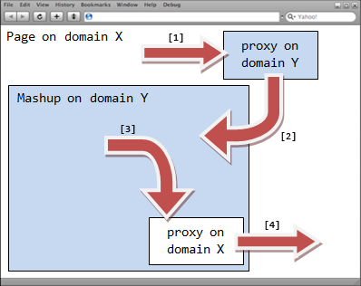

The mashup problem
According to my coworker Douglas Crockford, Mashups are the most interesting advancement in software development in decades. They are also unsafe in the current generation of browsers
. Lately, Douglas has been spending some time convincing the main browser vendors that mashups need to be made safe, wrote a proposal, and even mentioned Google Gears as a potential solution to the problem. While fixing the browser is the right thing to do, web developers are confronted with this problem today, and cannot afford to wait 5 years for a definitive solution.
Existing solutions to the mashup problem
One way mashups (or widgets, badges and gadgets, take your pick…) can be made safe is by sandboxing them in an IFrame pointing to another domain (Note: another way would be to run the untrusted code through ADsafe, and provide some safe API to do useful things on the page) The problem is that the Same Origin Policy isolates them so completely that they are then unable to cooperate with the page containing them or with each other. Several hacks have been exploited to achieve reasonably secure client-side cross-domain communication. The most popular ones use the URL fragment identifier or the Flash LocalConnection object.
Why the need for another technique?
CrossFrame is a variant of the URL fragment identifier mechanism. In the original technique, the containing page sets the URL fragment identifier of an embedded IFrame (usually via its src attribute), and the IFrame must poll to detect changes in the value of its location.hash property. This technique can be further built upon to allow for 2-way communications between an IFrame and its containing page, or between two distinct IFrames.
The original URL fragment identifier technique has many limitations, many of which can be worked around except maybe for the following:
- It unnecessarily consumes CPU cycles by requiring the receiver to poll.
- It creates “fake” history entries on Safari and Opera.
How does CrossFrame work?
While CrossFrame also has limitations of its own, I find it to be a much cleaner and simpler approach. Here is how it works:

In order to communicate with the mashup hosted in domain Y, the page, hosted in domain X, dynamically creates a hidden IFrame and points it to a special proxy file hosted in domain Y, using the URL fragment identifier to convey the message (step 1) When the special proxy file is loaded in the hidden IFrame, it reads its URL fragment identifier and passes it to a globally accessible function defined in the IFrame hosting the mashup (step 2) using parent.frames['mashup'] to get to it. The same technique can also be used by the mashup to communicate with the page (the proxy will use parent.parent to get to the page) Finally, when all is said and done, the hidden IFrame is automatically removed from the DOM by the library.
This however cannot work on Opera, which does not allow us to query any property of a window pointing to a different domain (so getting parent.parent for example will throw an exception) CrossFrame takes care of this by using, on Opera only, the HTML 5 way of sending messages across frames and across domains.
How to use CrossFrame?
In order to use the CrossFrame library, place the proxy file (proxy.html, included in the downloadable archive) on your web server so you can receive CrossFrame notifications for that domain. Make sure that the proxy file gets cached properly by web browsers, for example using a .htacess file similar to this one:
<Files proxy.html>
ExpiresActive on
ExpiresDefault "access plus 1 year"
</Files>
Then, import the necessary code and its dependencies in your page:
<script type="text/javascript" src="http://yui.yahooapis.com/2.3.1/build/yahoo-dom-event/yahoo-dom-event.js"></script> <script type="text/javascript" src="cross-frame.js"></script>
To receive messages, subscribe to the onMessage event:
YAHOO.util.CrossFrame.onMessageEvent.subscribe(
function (type, args, obj) {
var message = args[0];
var domain = args[1];
// Do something with the incoming message...
}
);
To send a message, call YAHOO.util.CrossFrame.send():
YAHOO.util.CrossFrame.send("http://www.y.com/proxy.html",
"frames['mashup']",
"message");
Here is a demo showing the CrossFrame library in action.
Limitations
The CrossFrame library does not support chunking (i.e. the ability to pass a large message in several smaller chunks) so the size of the messages that may be sent is limited by the maximum length of a URL (which varies across browsers…) However, it is not impossible to implement (for more information on chunking, you may want to look at Dojo’s XHR IFrame proxy implementation, which I believe supports chunking)
Also, the user may experience a short delay the first time a message gets sent to a specific domain. This is due to the server round trip necessary to download the proxy file. However, this can easily be mitigated by preloading the proxy file for that specific domain.
Conclusion: The dangers of temporary solutions
There is a danger associated with this kind of “hack”. First of all, browser vendors may decide to change their security policies and mimic Opera’s behavior for example. If this happens, CrossFrame will stop working for those browsers. Furthermore, I do not recommend using hacks because they slow down the rate of innovation on the web (it makes the task of developing web browsers even more complicated than it already is, and also makes your application less maintainable) Therefore, as paradoxical as it may seem, I do not recommend using CrossFrame (or any of those ugly hacks for that matter)
Pingback: Ajaxian » CrossFrame: a Safe Communication Mechanism Across Documents and Across Domains
Pingback: Ajax Girl » Blog Archive » CrossFrame: a Safe Communication Mechanism Across Documents and Across Domains
Bonjour Julien,
extrêmement intéressant!
merci
didier
Good idea. How do you do “proxy.html” on Microsoft IIS?
Pingback: Caminews » Julien Lecomte’s Blog » Introducing CrossFrame, a Safe Communication Mechanism Across Documents and Across Domains
Pingback: Javascript News » Blog Archive » CrossFrame: a Safe Communication Mechanism Across Documents and Across Domains
Hi,
In your js file, is there any reason why you are adding the iframe element twice (line 125 and 148)?
– Ricky